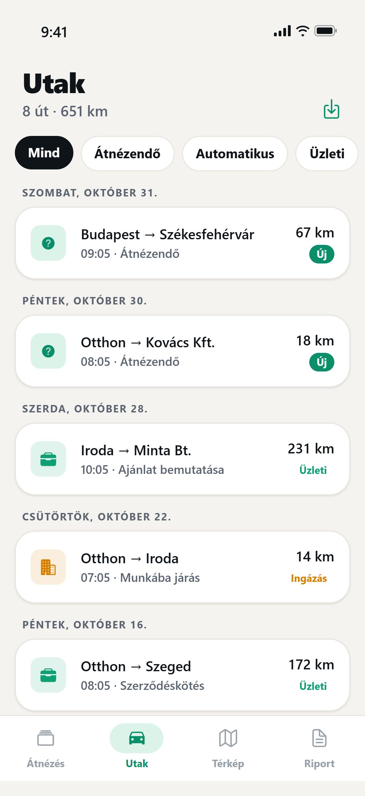
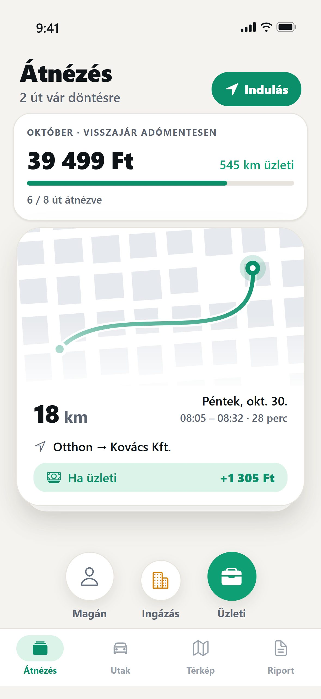
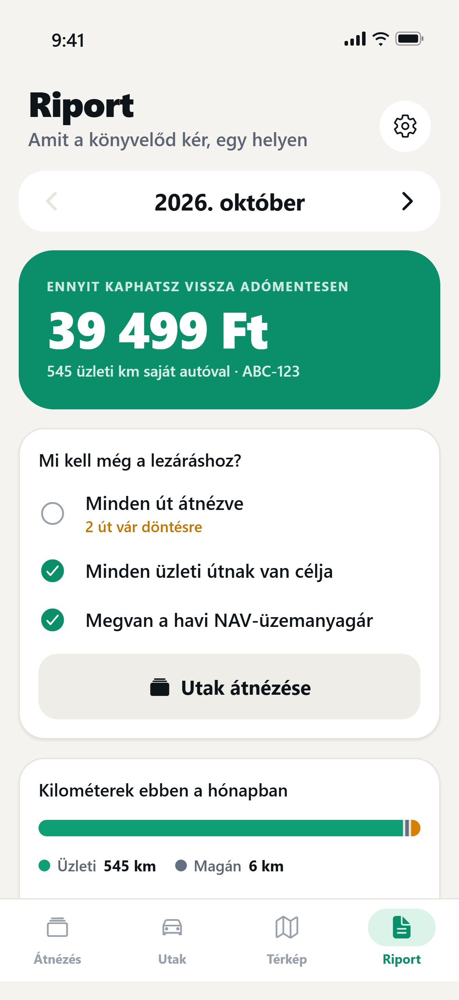
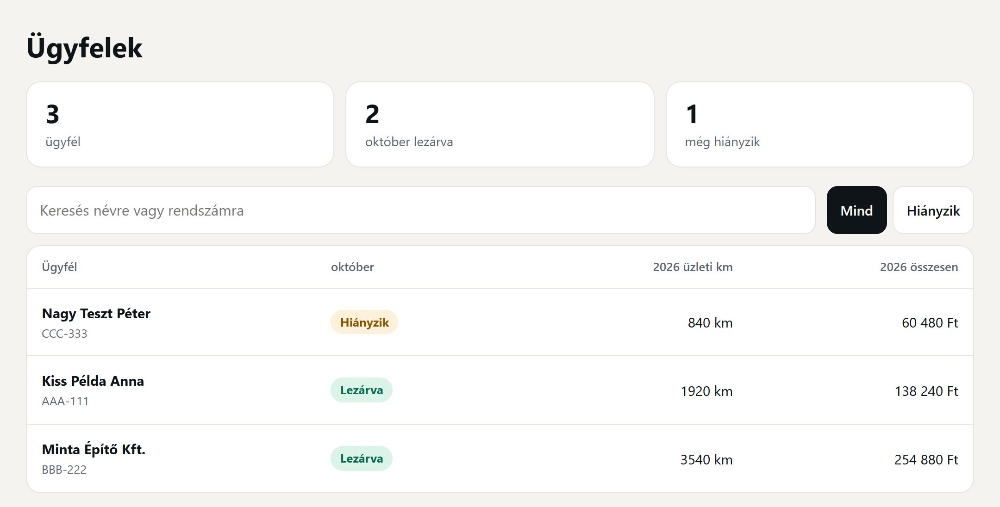
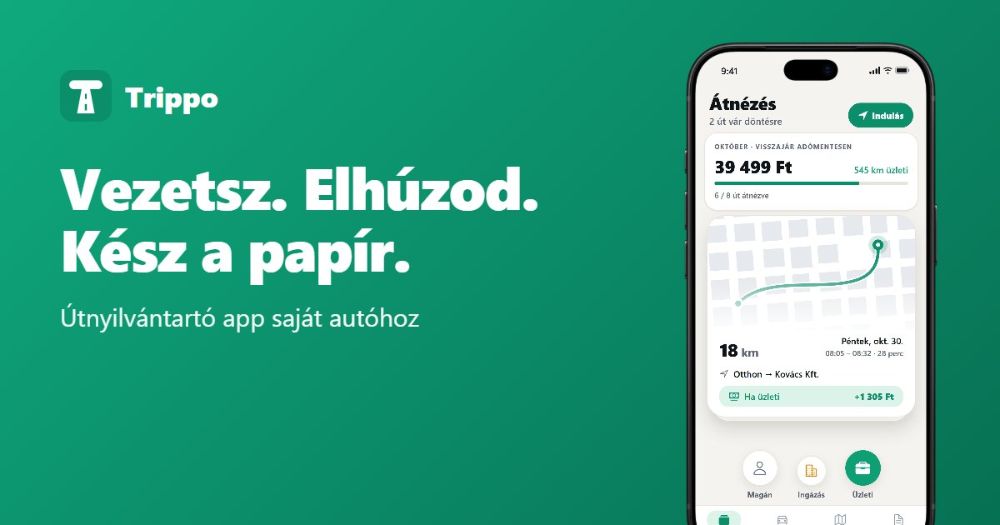

Sajtóanyag
A Trippo magyar útnyilvántartó app iPhone-ra. Ezen az oldalon minden megvan egy cikkhez: tények, képek, logó és videó. Szabadon felhasználhatók a Trippóról szóló cikkekben.
Tények
- Mi ez?
- Magyar útnyilvántartó app iPhone-ra. GPS-szel magától rögzíti az autós utakat, egy húzással besorolod őket, és hónap végén elkészíti az útnyilvántartást és a kiküldetési rendelvényt PDF-ben és Excelben.
- Kinek?
- Egyéni vállalkozóknak, kft-k tulajdonosainak és munkavállalóinak, saját, céges vagy lízinges autóval. A könyvelőknek ingyenes portál.
- Mit számol?
- Minden útnál a térítést: a fogyasztási norma szerinti üzemanyagot a havi NAV-áron, plusz 15 Ft/km általános normaköltséget.
- NAV
- Az útnyilvántartásban minden adat benne van, amit a NAV előír, és hiányos hónapot nem enged lezárni. A NAV nem hagy jóvá szoftvereket.
- Ár
- A rögzítés és a besorolás ingyenes. Trippo Pro: 1 990 Ft havonta vagy 19 900 Ft évente, 14 nap ingyenes próbával.
- Adatok
- EU-s szerveren tárolva. A magánutak útvonala és címei a telefonon maradnak.
- Készítő
- Nyisztor Ervin, Magyarország. Rólunk
Képernyőképek








Logó és borítókép



Videó
26 másodperces, hang nélküli bemutató: fekvő (16:9) · álló (9:16).
Kapcsolat
Kérdés, interjú, tesztelési hozzáférés: írj nekem, egy napon belül válaszolok.